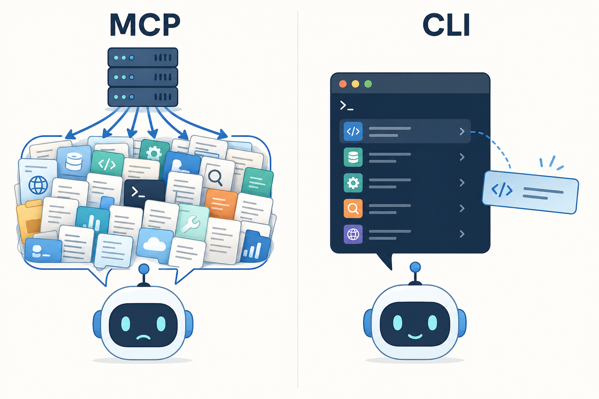
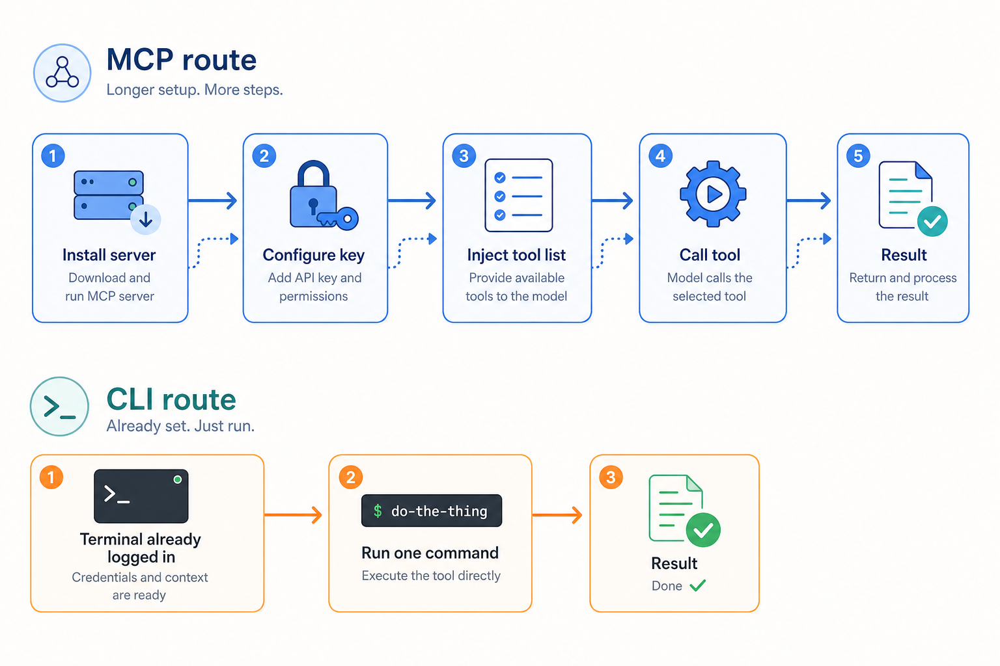

MCP 没死，但我把大半 Agent 活儿换成了 CLI：Cursor 用户的工具取舍
Skill / MCP / CLI 分层详解 — 上下文开销实测 — 五类必留 MCP 场景 — gh + AGENTS.md 完整落地指南
章节一
先把三个词摆清楚：Skill、MCP、CLI 不是同一层的东西
我在刚开始折腾 Cursor Agent 的时候，犯过一个很典型的错误：把这三样东西当成同类选项来比。其实它们根本不在一个维度上。
我现在用来解释它们的类比是：给 Agent 配工具，像给一个刚入职的聪明新同事配资源。
Skill（规则/知识层）相当于你给他准备了一份"内部操作手册"。这份手册里写着：我们这个项目有什么约定、危险操作要先确认、代码风格遵循哪个标准、提 PR 之前要跑哪些检查。这个同事会把手册里的规矩记住，以后做事就按这套来。常驻成本极低，消耗的上下文几乎可以忽略。
MCP（协议接入层）相当于你给他办了一批门禁卡和内部系统账号。GitHub、数据库管理后台、云平台控制台——这些系统你提前帮他接好了。每次他需要用某个系统，直接刷卡进去，接口是标准化的。但有一个隐性成本：每办一张卡，那张卡的说明书——这个系统有哪些功能、每个功能接受什么参数——都得先塞进他的脑子里，不管今天用不用得到。
CLI（终端执行层）相当于给他配了一台电脑，让他自己开终端敲命令。他本来就会用电脑，不需要你额外教他 git 怎么用、curl 怎么发请求——这些他在学校就学过了，工作语料里也全是。你让他干什么，他自己想好命令，敲进去看结果，不行就换个姿势再试。
💡 这三层是分层协作的关系，不是互相替代。Skill 管"懂规矩"，MCP 管"接能力"，CLI 管"动手干"。一个配置完善的 Agent 工作流，三样可以同时在用——只是不同任务的主力工具不一样。
章节二
MCP 到底"贵"在哪里
我说的"贵"不是钱，是上下文开销，以及随之而来的两个副效应。
MCP 的运作机制
MCP 是 Anthropic 提出的一套客户端-服务端协议，底层走 JSON-RPC。整个流程大概是这样：你启动一个 MCP Server（比如 GitHub 的、数据库的、某个 SaaS 的），Server 初始化完成后，会通过 tools/list 这个接口把它能提供的所有工具汇报给 Client——工具名字是什么、每个工具做什么、接受哪些参数、参数是什么类型，全部打包送过来。Client 拿到这份清单，把它注入到当前对话的上下文里。之后每轮对话，模型都能"看到"这些工具定义。当模型决定要用某个工具时，通过 tools/call 发起调用。
流程本身设计得很优雅。但代价就藏在"把工具定义注入上下文"这一步里。
第一层代价：工具定义是全量常驻的
不管你今天的任务用不用得到这个 Server 里的某个工具，只要你接了这个 Server，它所有工具的定义就先稳稳占住那块上下文预算。这个开销有多大？你自己可以去 Cursor 设置里看当前 MCP 工具定义吃掉了多少 token。如果你同时接了三四个功能丰富的 Server，上下文窗口里很大一块就被工具说明书占满了，留给真正的任务代码、对话历史和输出的空间就被压缩了。
第二层代价：注意力稀释
上下文里塞了大量和当前任务无关的工具定义，模型在"该用哪个工具"这件事上会变得更容易犯迷糊。假如你手边摆了 3 把工具，你拿对的概率很高；但如果摆了 30 把，其中还有几把功能描述相近，选错的概率就不是线性上升了。我自己遇到过好几次，Agent 明明可以直接用某个 MCP 工具做事，结果选了另一个参数不对的工具折腾半天——事后翻上下文，就是旁边有几个描述相近的工具把它给绕晕了。
第三层代价：运维复杂度
每个 MCP Server 是一个独立的进程或者网络服务。启动它需要配置，认证方式各家各异（有的是 API Key 塞环境变量，有的要 OAuth 流程，有的是本地文件 token），偶尔就是起不来——但起不来的原因可能是 Node 版本不对、端口被占、token 过期或者权限不够，要一层一层排查。这种排障链路对于"就想让 Agent 帮我查一下 PR"这种需求来说，实在是太重了。
章节三
CLI 为什么对 LLM 格外友好
这是我把大半任务迁到 CLI 的核心原因，展开说一下。

MCP 把所有工具定义一次性塞进上下文（左）；CLI 让 Agent 按需一条条查、用完即走（右）。
(a) 渐进式发现，信息按需加载
CLI 工具的用法不需要提前全部塞进上下文。Agent 想用 gh 做点什么，先跑一下 gh --help，看到命令目录；发现自己要的是 PR 相关操作，再跑 gh pr --help，看子命令；确定要列出 PR，gh pr list --help 看参数。每次 --help 的输出只有几十行，加载的都是当前步骤需要的信息，用完就不占了。这和 MCP"开局把整本手册塞进去"的方式正好相反。
(b) 模型对 CLI 工具天生熟悉
LLM 的训练语料里有几十年积累的 Unix 文档、无数 Stack Overflow 问答、海量 shell 脚本和教程。git、curl、grep、gh、docker、jq 这些工具，模型见过太多遍了，不需要你额外教。相比之下，一个私有的 MCP Server 或者小众的 SaaS MCP，模型在训练时可能根本没见过，完全靠你在上下文里提供的工具描述来理解——描述写得模糊，理解就偏。
(c) 管道组合，天然支持后处理
Unix 管道这个设计实在是太好用了。gh pr list 出来的结果要按字段筛选？接个 jq。要统计行数？接个 wc -l。要格式化成表格？接个 column。这些后处理不需要 Agent 额外写程序，一个 | 就串起来了。如果是 MCP 返回了一坨结构化数据，Agent 要做后处理，通常得写段代码、存中间变量、再处理——链路更长，出错点也更多。
(d) 可调试，出错直接复现
这一点我自己感触特别深。Agent 用 MCP 调了个接口出错了，你要调试，得看 Client 日志、看 Server 日志、对比 JSON 请求和响应，整个链路是黑盒的。Agent 用 CLI 跑了条命令出错了，你把那条命令复制到自己终端敲一下，看到的结果和 Agent 看到的完全一样。问题一目了然。这种"我能直接复现 Agent 的视角"的能力，在排查问题时价值极大。
(e) 生态成熟，工程惯例稳定
成熟 CLI 工具有几十年的工程实践积累：退出码 0 代表成功，非 0 代表失败；正常输出走 stdout，错误信息走 stderr；不少现代工具还支持 --json 或者 -o json 输出机器可读的格式。这些惯例是稳定的，Agent 可以依赖它们做判断，不需要为每个工具单独处理输出格式的特殊情况。
章节四
一个真实的对照：同一个需求，两条路
说说一个我自己真实做过的对照。
需求很简单：列出仓库里所有 open 状态的 PR，看看每个人有几条、分别是哪些。

同一个需求：MCP 路线要走装 Server、配 key、注入工具、调用、拿结果五步；CLI 路线只要"已登录 → 一句命令 → 完成"。
路线 A：MCP 方式
当时我用的是 GitHub 的 MCP Server。步骤大概是：找到 MCP Server 的包、搞清楚认证方式（需要创建一个 Fine-grained token 并给对应仓库权限）、在 Cursor 的 MCP 配置文件里写好 Server 定义、重启 Cursor 让 Server 生效、确认 Agent 能看到工具列表。整个配置过程花了差不多二十分钟——主要时间在搞 token 权限，GitHub 的 Fine-grained token 权限选项挺细的，一项一项勾。配好以后能用，但上下文里多了一大块 GitHub 工具定义。
路线 B：CLI 方式
我本机的 gh 之前已经装好并且 gh auth login 过了。Agent 模式下，我直接说："用 gh 列出这个仓库所有 open 的 PR，按作者分组显示"。Agent 自己组了这条命令：
gh pr list --state open --json number,title,author \
--jq 'group_by(.author.login)[] | "\(.[0].author.login): \(map("#" + (.number|tostring))|join(", "))"'
跑完，输出直接就是我要的格式。从发出需求到拿到结果，不到一分钟。如果 jq 表达式写错了，我自己在终端把这条命令跑一下，能立刻看到报错信息，改起来也快。
⚠️ 体感结论：对于"就这一个需求、本机 gh 已经装了"的场景，CLI 这条路配置几乎为零、上下文几乎不占、出错能当场复现。MCP 那条路每一步都是成本，而且配好之后那堆工具定义就常驻了，即便你今天只用了一个"列 PR"的功能。但这不代表 MCP 没用，也不代表应该全换成 CLI。
还没有 Cursor？通过邀请通道注册，首月 Pro / Pro+ / Ultra 立享 5 折（Pro 仅需 $10）：
👉 立即注册（首月 5 折）
章节五
我实际怎么分工：不是非此即彼
默认走 CLI 的场景
以下这些，我基本不考虑 MCP，直接让 Agent 用 CLI：
- Git 和 GitHub 操作：提交、推送、切分支、打 tag、开 PR、合并、查 PR 列表、看 CI 状态——全走
gh 和 git。这两个工具文档完整、Agent 极其熟悉，几乎不出错。
- 文件批处理：批量改文件名、按条件筛文件、批量替换文本——
find/grep/sed/awk 或者 PowerShell 的等价命令。
- 日志排查：查应用日志、统计错误频次、找特定时间段的记录——
grep -E、awk、tail -f。
- 跑测试和构建：就是敲
npm test/pytest/go test/make——没什么特别的。
- 容器操作：
docker ps、docker logs、docker exec——这些 Agent 会。
- 一次性脚本化任务：把若干条命令串起来做一件事，用完就扔——写成 shell 脚本或者 PowerShell 脚本，跑完存档，下次复用。
这些场景的共同特点是：有成熟的 CLI 工具、操作是读取或者可以预期的写入、出错成本可控、需要的上下文轻。
我反而坚持留 MCP 的场景
以下这些场景，我用了 CLI 之后又退回到 MCP，因为 CLI 确实不够用：
① 根本没有等价 CLI。浏览器自动化是最典型的例子。让 Agent 去打开某个页面、点按钮、读取 DOM 里的内容、截图做视觉验证——这件事没有 CLI 能干。你得用 Playwright 的 MCP Server 或者类似的浏览器自动化 MCP。还有一些 SaaS 工具只提供了 API 和 MCP，没有像样的命令行工具——这时候 MCP 也是没得选的选项。
② 需要稳定的结构化返回。有些任务里 Agent 要基于返回结果的某几个字段做判断，比如"如果这次部署的状态是 failed，去取 failure_reason 字段的值再决定下一步"。MCP 工具的返回是有类型的结构，比 CLI 文本输出稳定得多。有些老命令行工具的输出格式每个版本可能都有细微差异，Agent 解析起来偶尔会翻车。
③ 跨客户端、跨团队复用。如果你在团队里维护一套内部工具——比如封装了部署审批流程、或者数据库的受控查询接口——做成 MCP Server 的好处是：团队里用不同 Agent 客户端的人（Cursor、Claude Desktop 或其他 MCP 兼容客户端）都能用同一套接口，权限控制和审计也能集中做。
④ 没有 shell 的运行环境。某些沙箱环境、某些 CI 步骤的 Agent 插件、某些受限的远程容器——根本不给你开终端。这时候 MCP 是接入外部能力的唯一方式。
⑤ 危险操作需要收口和审计。对于真正危险的操作，把它封装成 MCP 工具——明确定义这个工具能做什么、参数边界是什么、每次调用有日志——比放开一个无边界的 shell 更可控。
Skill 放哪层
Skill（也就是 .cursor/rules 或者 AGENTS.md 里的规则文件）不和 MCP、CLI 抢活，它是完全不同的一层。Skill 解决的是"让 Agent 懂这个项目的规矩"——用哪种风格提交、危险命令怎么处理、这个仓库有哪些约定、优先用哪些工具。它的开销极轻（几百到几千 token 的规则文本），但收益明显：你不需要每次都在对话里重复交代背景。
💡 Skill 配合 CLI 用是最香的组合：用规则告诉 Agent"本项目优先走 CLI、陌生命令先 --help 再执行、涉及删除和修改的命令必须先停下来跟我确认"，然后让它用 CLI 动手——规矩在 Skill 里，手脚在 CLI 里。
章节六
在 Cursor 里怎么把这套跑起来
装 gh 并登录
gh 是 GitHub 官方命令行工具，是这套方案里最核心的一块：
# Windows（推荐用 winget）
winget install --id GitHub.cli
# 装完验证
gh --version
# macOS
brew install gh
装完之后：
gh auth login
按提示选 GitHub 官网、选 HTTPS、用浏览器完成 OAuth 登录。登录完跑一下 gh auth status 确认没问题。这一步必须提前做好，不能指望 Agent 帮你做——认证流程有交互式确认环节，Agent 替不了你。
在 Cursor 里配 Agent 的命令执行策略
Cursor Agent 模式自带终端能力，可以直接运行命令。但我强烈建议把命令的确认策略配清楚：
- 只读/查询类命令（
gh pr list、git log、docker ps、grep——不改任何状态的）：可以放行自动执行。
- 写入类命令（
git push、gh pr merge、docker rm、任何 rm/del）：要求 Agent 在执行前向你展示命令并等确认。
- 不可逆的危险操作（
git reset --hard、docker system prune、数据库的 DROP）：直接告诉 Agent 不准自己执行，必须给你看命令让你手动敲。
给 Agent 立规矩（AGENTS.md 模板）
在项目根放一份规则文件，我用的是 AGENTS.md（纯 Markdown，简单直接；老一点的 Cursor 版本也可以放成 .cursor/rules/agent-cli.mdc）。以下是我自己用的规则模板，可以直接拿去改：
# Agent CLI 操作规范
## 工具优先级
1. 优先使用 CLI 工具（gh、git、docker、curl 等）完成任务
2. 使用前不熟悉的命令，先跑 `<命令> --help` 查看用法再执行
3. 只有 CLI 无法覆盖时，才考虑使用 MCP 工具
## 命令执行规则
- 只读/查询命令可自动执行（gh pr list、git log 等）
- 涉及写入、推送、合并的命令：执行前向用户展示命令并等待确认
- 涉及删除、重置、不可逆操作的命令：禁止自动执行，必须由用户手动确认并执行
## 跨平台注意
- 当前环境是 Windows + PowerShell
- 需要 Unix 命令时，优先找 PowerShell 等价写法
- 不要假设 bash 命令在 PowerShell 里可以直接用
## 输出处理
- 优先在命令里直接用 --json + --jq 或 PowerShell 管道处理输出
- 避免把大量原始输出塞回对话——先过滤再返回相关部分
把高频操作固化成脚本
当你和 Agent 合作排查过一个问题、或者完成了一个需要多条命令配合的任务，让 Agent 把这次用到的命令整理成可重复运行的脚本，存进 scripts/ 目录：
scripts/
list-open-prs-by-author.sh
check-ci-status.sh
cleanup-merged-branches.sh
下次有同样需求，一条命令搞定，不用重新教 Agent。把一次性经验固化成可复用工具，这是整套方案里投入产出比最高的操作。
章节七
CLI 不是银弹：几个我踩过的坑
写入操作有副作用，失误了不一定能回滚
git push --force 是 Agent 如果理解错了需求很可能给出的命令。docker system prune 会清掉你所有没用的容器和镜像。文件删除更是直接的。Agent 组命令的思路不一定和你的完全一致——在你完全信任一条命令之前，自己读一遍，特别是带 --force、-f、-r 这类 flag 的。我的习惯是：凡是有副作用的命令，都在自己终端先 dry-run 一下，或者把命令参数再对一遍，确认没问题再执行。
有些操作 CLI 也需要交互式确认，Agent 替不了你
gh auth login、很多包管理器的首次安装、交互式的 git rebase -i——这些流程里有交互式步骤，等你输入、等你在浏览器里点确认。Agent 跑到这一步会卡住，它没办法替你按键。你需要自己接手，把交互式的部分做完，让 Agent 接着往下。
Windows + PowerShell 的跨平台坑
这个在 Windows 上用 Cursor Agent 跑命令的时候很高频出现，单独说一下。最典型的坑之一：sc 命令。在 bash/zsh 环境里 sc 可能什么都不是，但在 PowerShell 里 sc 是 Set-Content 的别名。如果 Agent 想用 sc.exe（Windows 的服务控制工具），它得显式写 sc.exe——不然 PowerShell 会把它当成 Set-Content 执行，结果会很奇怪。
类似的坑还有：ls 在 PowerShell 里是 Get-ChildItem 的别名，输出格式和 Unix ls 完全不同，ls -la 这种 flag 在 PowerShell 里是不认的。rm -rf 在 PowerShell 里也得改写成 Remove-Item -Recurse -Force。在规则文件里专门加一条"当前环境是 Windows + PowerShell"来提醒 Agent，效果明显。
文本输出解析不稳定
有些老旧命令行工具的输出格式不是为机器解析设计的——列宽会随内容变化、字段之间用空格而不是分隔符、不同版本的输出格式可能略有差异。Agent 解析这种输出写的代码，有时候在你本地跑好的，换一台机器因为工具版本不同就挂了。遇到这种情况，老老实实上 --json 输出。大多数现代工具都支持。如果工具实在没有结构化输出选项，这反而是用 MCP 的好理由。
小结
分层，不是决赛
回到最开始那个问题：MCP 死了吗？
没有。它解决了一类 CLI 解决不了或者解决得很别扭的问题。但对我自己的日常 Agent 工作流来说，把常用执行任务迁到 CLI 是一次非常值得的重构——更轻、更快、更透明、更容易调试。MCP 退到了它最擅长的位置：无 CLI 等价物的能力接入、需要结构化返回的复杂场景、需要权限收口的危险操作。
分层是关键词，不是非此即彼：
- Skill（规则层）：把项目约定和操作规范喂给 Agent，让它懂规矩；常驻、轻量。
- CLI（执行层）：高频、简单、可探索的日常任务；按需、透明、可调试。
- MCP（能力接入层）：无 CLI 等价物、需要结构化/跨端复用/权限收口的场景；按需接入，不乱堆。
如果你现在想把这套方案在自己的项目里跑起来，4 件事优先级最高：
- 装
gh 并完成登录。这是成本最低、收益最快的一步，装完你的 Agent 就能处理绝大多数 GitHub 工作流。
- 给 Agent 立
--help 优先的规则。在规则文件里写明"陌生命令先 --help 查用法再执行"，能避免很多 Agent 因为参数猜错搞出意外的情况。
- 涉及写入和删除的命令，要求 Agent 先展示再执行。无论如何，先看一眼，这个习惯值得养成。
- 把高频排查操作固化成
scripts/ 里的脚本。第一次合作解决了某个问题，让 Agent 整理成脚本存起来——下次直接用，经验变工具。
💡 "2026 年最值得搭的 Agent 干活方式"——CLI + 一层薄薄的规则，MCP 按需补位。不追标题党，按场景选工具。
相关教程
通过邀请通道注册 Cursor，首月 Pro / Pro+ / Ultra 立享 5 折——Pro 仅需 $10、Pro+ 仅需 $30、Ultra 仅需 $100。
👉 立即开通（首月 5 折）
邀请通道仅对首月生效，次月起恢复原价；可随时取消订阅。